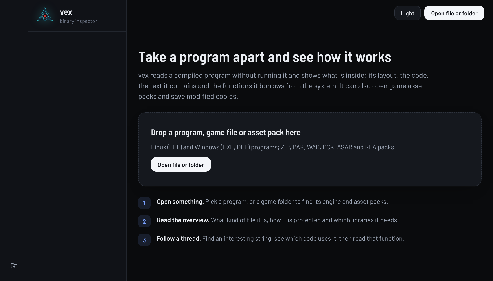
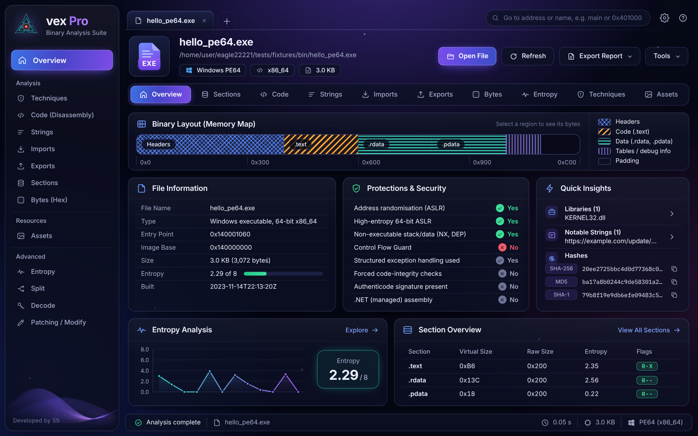
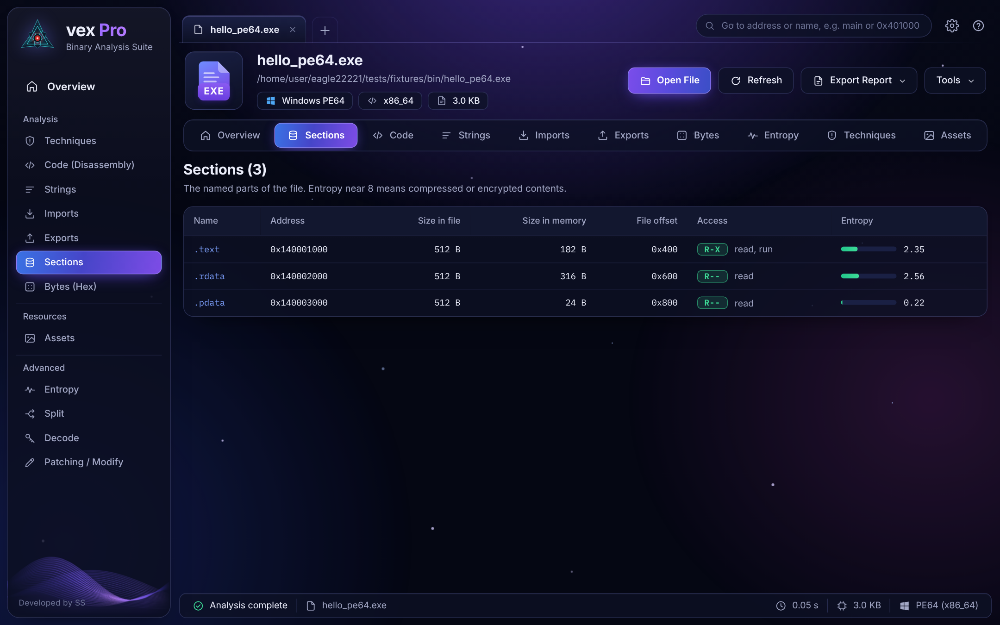
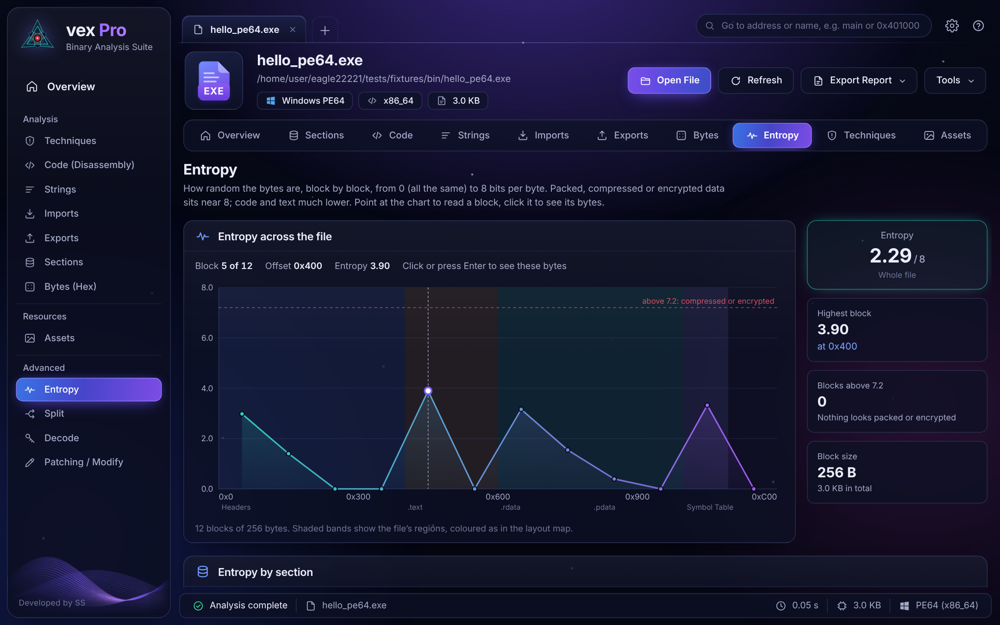
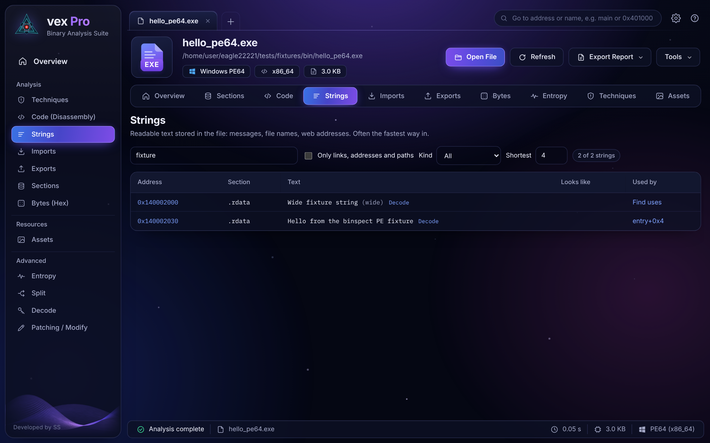
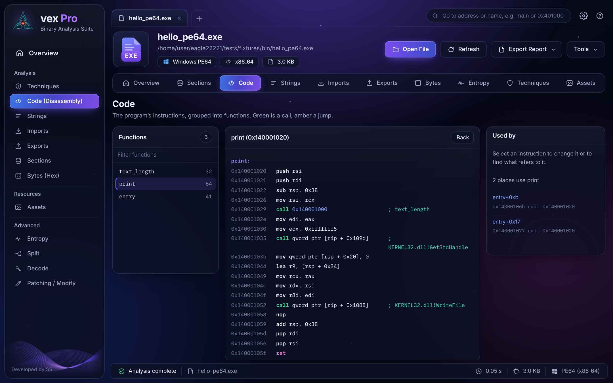
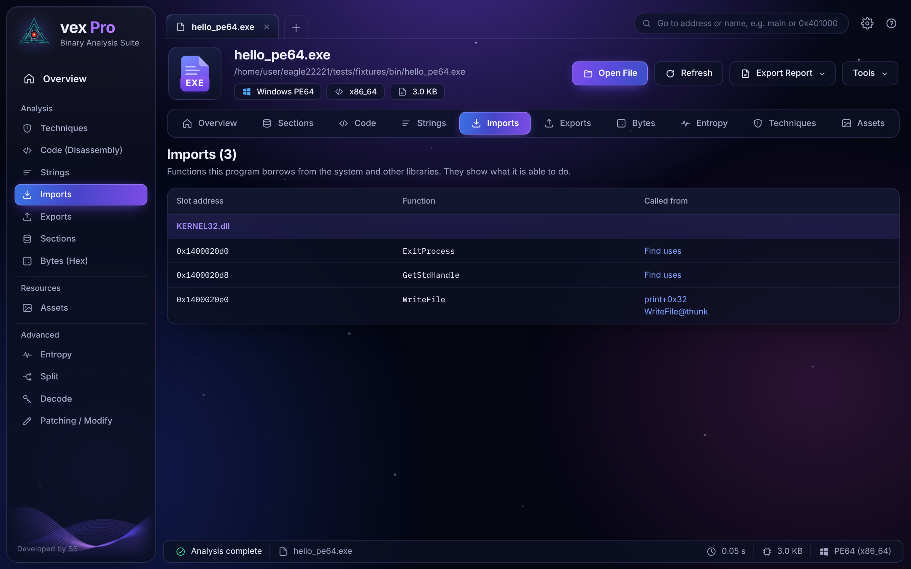
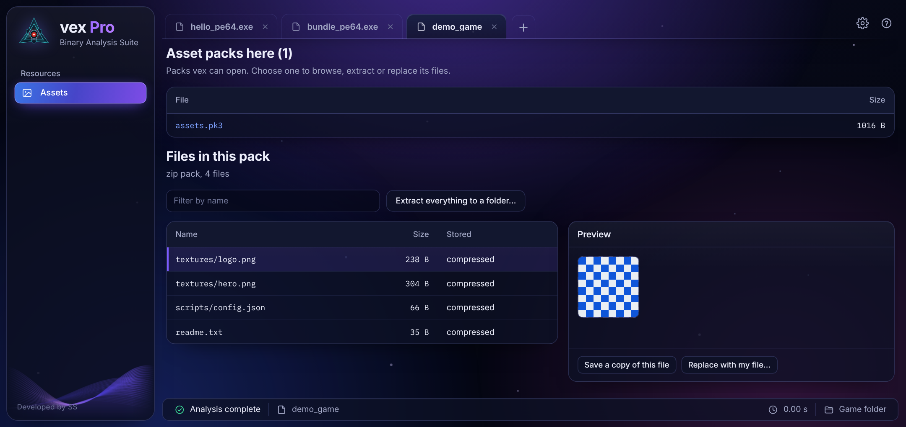
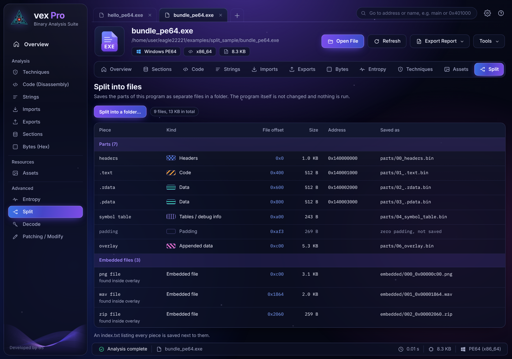
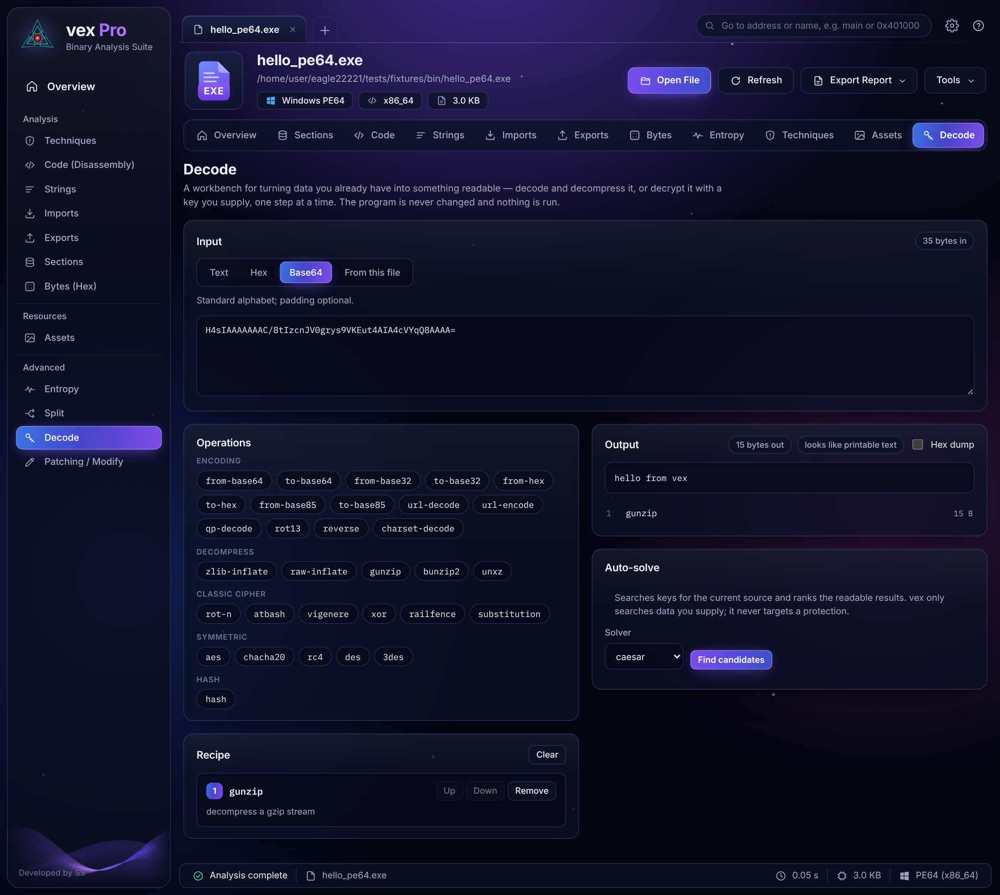

How to open a Linux or Windows program, read what is inside it, and browse the asset packs that games ship with.
Each lesson takes about five minutes. The practice files come with vex, so you can follow every step exactly as written.
You need Python 3.9 or newer. Everything else is installed for you.
pip install .vex gui
When vex starts, its logo plays a short opening animation, once per session. Click anywhere, or press Escape, Enter or Space, to skip it. The gear button at the top right opens the settings: a dark or light look, and a switch that keeps the animated background still.
The folder tests/fixtures/bin holds small programs made for practising. The lessons use hello_pe64.exe, a tiny Windows program that prints two lines of text. Linux programs such as libsample.so in the same folder work in exactly the same way, and you can open either kind on either system.
Goal: say what a program is before looking at any detail.
tests/fixtures/bin and pick hello_pe64.exe. You can also type or paste its path into the box at the top of that window and choose Open.
| Field | What it tells you |
|---|---|
| Type | Linux or Windows, program or library, and the processor it was built for. |
| Entry Point | The address of the first instruction. |
| Entropy | How random the bytes look, from 0 to 8. A value above about 7.2 usually means the contents are compressed. |
| Protections & Security | Safety features the program was built with, such as address randomisation. A green tick means present; a red cross means a usual one is missing. |
| Libraries | Other files the program needs in order to start. The arrow beside them opens Imports. |
| SHA-256 | A fingerprint of the file, under Hashes. Two files with the same fingerprint are identical. The button beside it copies it. |
entry.You learned: the practice file is a 64-bit Windows program for x86-64 processors that needs one system library, KERNEL32.dll.
Goal: know where the code and the data are.
The strip in the Binary Layout card, at the top of the overview, is the whole file, drawn to scale from its first byte to its last. Each kind of content has its own hatching, the way materials do in a technical drawing; the key is on the right of the card.
.rdata, to see its bytes in the Bytes view.
| Windows name | Holds |
|---|---|
.text | The program's code |
.rdata | Text, constants, import tables |
.data | Variables |
.rsrc | Icons, version details, dialogs |
| Linux name | Holds |
|---|---|
.text | The program's code |
.rodata | Text and constants |
.data, .bss | Variables |
.plt, .got | Links to library functions |
Entropy, which you met in lesson 1, can also be measured part by part. The Entropy view draws it along the whole file, one block at a time, so a packed or encrypted stretch stands out as a plateau near 8.

You learned: a program is made of named parts with different jobs, and the code is often a small slice of the file. If the map shows "appended data" at the end, extra content is attached after the program; many games and installers store their files there. The Entropy view shows whether any part looks packed or encrypted.
Goal: find a piece of readable text and see which code uses it.
Programs keep their messages, file names and web addresses as plain text. Reading them is the quickest way to get a feel for what a program does.
fixture in the search box. The list narrows as you type.
You learned: strings work as an index into the code. A message or a file name leads you to the function that handles it.
Goal: follow what a function does without knowing every instruction.
The Code view has three columns: the functions vex found, the instructions of the one you chose, and Used by, which lists the places that call it.
print in the function list.text_length, then two Windows functions, GetStdHandle and WriteFile.text_length line to go to that function. Back returns you.print is called twice from entry.
| Instruction | Plain meaning |
|---|---|
mov a, b | Copy b into a. |
lea a, [x] | Put the address of x into a. Often how a function gets hold of a string. |
add, sub | Arithmetic. |
cmp, test | Compare two values; the next jump usually depends on the result. |
jmp, je, jne … | Continue somewhere else, always or only if a comparison came out a certain way. |
call | Run another function, then come back. |
ret | Finish this function. |
You learned: you can understand the outline of a function from its calls alone, and move between functions by clicking.
Goal: see what a program asks the operating system to do.
A program does not draw windows, open files or use the network by itself. It asks the system, by calling functions in system libraries. The list of those functions is a good summary of what the program is able to do.
WriteFile and choose Find uses. The answer is the function you read in lesson 4.
| If you see… | The program probably… |
|---|---|
CreateFile, ReadFile, fopen | reads or writes files |
socket, connect, WSAStartup, InternetOpen | uses the network |
RegOpenKey, RegSetValue | reads or changes Windows settings |
CreateWindow, MessageBox | shows windows and dialogs |
The Exports view, just below Imports in the sidebar, is the other side of the exchange: the functions a file offers to other programs. Most programs offer none; open sample.dll or libsample.so from the same folder to see a library's list.
You learned: imports show a program's abilities at a glance, and Find uses shows where each one is used.
Goal: find out which engine a game uses, look inside an asset pack, and swap one file for your own.
Games keep their pictures, sounds and scripts in packs. vex can open the common open formats: ZIP-based packs (.zip, .pk3, .love, .jar), Quake .pak, Doom .wad, Godot .pck, Electron .asar and Ren'Py .rpa.
examples/demo_game, a pretend game that comes with vex.
You learned: how to go from a game folder to the files inside its packs, and how to make a new pack with one file changed.
Goal: save the parts of a program as separate files, and know what each file is.
Lesson 2 showed the parts of a program on the file map. Split saves each part as its own file, together with a copy of every complete file it finds inside the program, such as a picture, a sound or a ZIP archive. The program itself is not changed, and nothing is run.
bundle_pe64.exe from examples/split_sample, a small practice program with a picture, a sound and a ZIP archive attached to its end. It opens in a tab of its own.index.txt first.
| In the folder | What it holds |
|---|---|
parts/ | The program cut into its parts, in file order: headers, code, data, tables and anything attached after the program. Put back together in order, they give the original file, byte for byte. |
embedded/ | Complete files found inside the program: PNG and GIF pictures, WAV, AVI and WebP files, ZIP archives, and other Windows or Linux programs. |
resources/ | The icons, version details and other built-in resources of a Windows program (Python edition). |
index.txt | The original's name, size and SHA-256 fingerprint, then one line per piece. Empty filler between parts (zero bytes only) is listed here with its size and is not saved as a file. |
You learned: how to save a program as separate pieces, each an exact copy of what the file holds.
Goal: turn encoded or encrypted data back into something readable, one step at a time.
Data is not always stored in the clear. A piece of text might be base64, a lump of bytes might be gzipped, and a string from a file might be scrambled with a cipher. The Decode view is a small workbench for turning such data back into something you can read. It works only on data you give it.
H4sIAAAAAAAC/8tIzcnJV0grys9VKEut4AIA4cVYqQ8AAAA=.gunzip — it was a gzipped message. (Starting instead from Text, you would add from-base64 first, then gunzip.)printable text or gzip. Here it reads hello from vex.xor with its key, aes with its key and starting value (IV), or chacha20 with its key and nonce. Steps the edition you are running cannot do are greyed out.
| Group | What it does |
|---|---|
| Encoding | Turn base64, base32, hex, base85, URL or quoted-printable text back into bytes; also ROT13, reverse, and reading one character set as another. |
| Decompress | Expand zlib, gzip, bzip2 or xz data. |
| Classic cipher | Caesar (ROT-N), Atbash, Vigenère, rail fence, substitution and repeating-key XOR. |
| Symmetric | AES, ChaCha20, RC4, DES and Triple DES — decrypted only with the key you supply. |
| Hash | The MD5, SHA-1, SHA-256 or CRC32 of the data (one way, for checking — not a way to decode). |
Text from the Strings view comes here with the Decode link beside it, and the bytes on show in the Bytes view with Open in Decode. Auto-solve, under the output, tries every Caesar shift, every single-byte XOR key or a short repeating XOR key, and ranks the results by how much they read like English. They help with a simple puzzle; they are not an attack on real encryption, and they only ever work on the data you give them. To practise, examples/decode_sample/secrets.txt has five small puzzles, each with a hint.
You learned: how to chain decoding and decryption steps into a recipe and read the result — and where the line is: vex transforms data you provide, with a key you supply, and never breaks encryption or protection.
Everything in the lessons is also available as a command. Put --json right after vex to get output other tools can read.
| Command | Shows |
|---|---|
vex gui [PATH] | Opens the graphical interface in a window of its own |
vex gui --browser | Opens it in a tab of your web browser instead |
vex info FILE | The overview (lesson 1) |
vex report FILE | Overview, sections, imports, notable strings and functions together |
vex sections FILE | The section table (lesson 2) |
vex entropy FILE [--points N] | Entropy along the file, block by block (lesson 2) |
vex hexdump FILE 0x2000 | Bytes at an address |
vex strings FILE --grep TEXT | Strings containing TEXT (lesson 3) |
vex strings FILE --tagged | Only links, addresses and paths |
vex functions FILE | The function list (lesson 4) |
vex disasm FILE NAME | The instructions of one function |
vex xrefs FILE NAME | Where a function or import is used |
vex xrefs FILE --string TEXT | Where a string is used |
vex imports FILE | Imported functions (lesson 5) |
vex exports FILE | Functions a library offers (lesson 5) |
vex engine FOLDER | The game engine and its packs (lesson 6) |
vex assets list PACK | Files in a pack |
vex assets extract PACK FOLDER | Unpacks a pack |
vex assets replace PACK NAME FILE -o NEW | Writes a new pack with one file swapped |
vex resources list FILE | Icons and version details in a Windows program |
vex split FILE FOLDER | Saves the parts of a program as files in a folder (lesson 7) |
vex decode SOURCE [--recipe "op|op"] | Decodes, decompresses and deciphers data you give it (lesson 8) |
For any command, vex COMMAND --help lists its options.
| Word | Meaning |
|---|---|
| Address | The position of a byte in memory while the program runs, written in hexadecimal, for example 0x140001000. |
| Offset | The position of a byte in the file on disk. |
| ELF, PE | The file formats of Linux and Windows programs. |
| Section | A named part of a program file, such as code or constants. |
| Function | A piece of code with one job, which other code can call. |
| Import | A function the program borrows from a library. |
| Cross-reference | A place in the code that uses a given function, import or string. This is what Find uses and Used by show. |
| Asset pack | A single file that holds many game files, like a ZIP archive. |
| Entropy | A measure of how random data looks. Compressed data scores close to 8. |